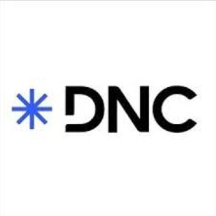

01 / 05
Extração
Consolido dados de ERPs, bancos de dados, BigQuery, listas do SharePoint e planilhas Excel.
(01) — Sobre
Do dado bruto à decisão. Extraio, trato, modelo e entrego dados que viram estratégia. Hoje como Data & Operations Analyst na Zeentech, junto à operação da Ford Motor Company.
Trabalho com coleta, organização, análise e visualização de dados operacionais, com forte interface entre áreas e stakeholders. Apoio a tomada de decisão com dashboards, indicadores e relatórios executivos.
Também trago bagagem em gestão de projetos — metodologias ágeis e cascata — acompanhando prazos, indicadores, riscos e entregas.
Nos momentos livres, leio e ouço música. Estudo comunicação, oratória, persuasão e storytelling, e aplico isso na forma de apresentar análises.
Onde já gerei impacto
(02) — Como trabalho com dados
01 / 05
Consolido dados de ERPs, bancos de dados, BigQuery, listas do SharePoint e planilhas Excel.
02 / 05
Padronização e tratamento de dados vindos de fontes diferentes — para que todo número conte a mesma história.
03 / 05
Modelagem em esquema estrela, criação de medidas e indicadores que sustentam a análise.
04 / 05
Automação de rotinas e relatórios recorrentes, liberando tempo para o que importa: a análise.
05 / 05
Dashboards, relatórios gerenciais e apresentações com storytelling para quem decide.
(03) — Experiência & trajetória
Atuação junto à operação da Ford Motor Company
Maior empresa de mobilidade da América Latina
(04) — Cases & soluções
(05) — Tech stack & formação
Cursos & formações
Data Analytics ProfessionalXperiun↗
Engenharia de DadosEscola DNC↗ Análise de DadosHashtag Treinamentos↗ Análise e Desenvolvimento de SistemasCentro Universitário Padre Anchieta↗IA generativa como apoio
Uso Claude, Claude Code, ChatGPT, Gemini e outras IAs como apoio ao trabalho analítico, sempre com revisão e validação humana.
Escrita, revisão e depuração de fórmulas, consultas e scripts (DAX, Power Query, SQL, VBA).
Estruturação de narrativas e apresentações que facilitam a compreensão dos dados.
Valido toda saída antes de usar e não compartilho dados sensíveis com ferramentas externas.
(06) — O que dizem sobre meu trabalho
“Profissional com rápida adaptação ao negócio e forte senso de responsabilidade. Em pouco tempo, passou a gerar valor real por meio da melhoria de processos e da aplicação consistente de Data Analytics e Business Intelligence. Destaca-se pela comunicação clara, colaboração com o time e pela capacidade de transformar dados em insights acionáveis.”
“Tive a oportunidade de trabalhar com o Gustavo por quase dois anos e pude acompanhar sua rápida curva de aprendizado, capacidade de solucionar problemas e ótima comunicação com fornecedores e clientes internos. Destacou-se no Projeto PMOC, onde foi responsável pelo estudo de viabilidade, aprovação, implementação e operação.”